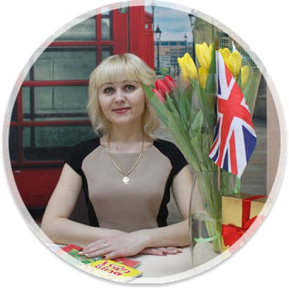

ПРЕПОДАВАТЕЛЬСКИЙ СОСТАВ

Калдарар Оксана Яковлевна
Образование: ВГПУ/факультет иностранных языков
Опыт работы: Более 11 лет
Специализация: английский для детей и школьников,
подготовка к экзаменам, разговорный английский для
взрослых, экспресс курсы для туристов
подготовка к экзаменам, разговорный английский для
взрослых, экспресс курсы для туристов

Синицына Алла Владимировна
Образование: ВГПУ/факультет иностранных языков
Опыт работы: 12 лет
Специализация: Английский для малышей, английский
для школьников, индивидуальное обучение взрослых, экспресс курсы для туристов
для школьников, индивидуальное обучение взрослых, экспресс курсы для туристов
Промотаева Валентина Николаевна
Образование: ВГПУ/факультет иностранных языков
Опыт работы: С 2009 - репетиторство, с 2013 г
-преподаватель английского и немецкого
-преподаватель английского и немецкого
Специализация: Разговорный английский для взрослых,
курсы английского для детей, экспресс-курсы для туристов,
индивидуальные занятия, немецкий для детей
курсы английского для детей, экспресс-курсы для туристов,
индивидуальные занятия, немецкий для детей
Бурцева Наталья Владимировна
Образование: ВГПУ/факультет иностранных языков
Опыт работы: Более 8 лет
Специализация: Английский для школьников,
помощь в школьном обучении, индивидуальные занятия
помощь в школьном обучении, индивидуальные занятия
Неронова Татьяна Николаевна
Образование: ВГПУ, БРУ(Бирский филиал)
Опыт работы: C 2008 года
Специализация: Раннее развитие , логопедия
Семенова Анна Валентиновна
Образование: ВГПУ, педагог-психолог
Опыт работы: Более 7 лет
Специализация: Раннее развитие , творчество
Наумова Анна Вадимовна
Образование: ВГПУ, факультет иностранных языков
Опыт работы: Более 11 лет
Специализация: Английский для подростков и
взрослых, разговорные курсы, подготовка к экзаменам
взрослых, разговорные курсы, подготовка к экзаменам
Барышникова Надежда Александровна
Образование: ВГПУ, факультет иностранных языков
Опыт работы: С 2014 года
Специализация: Английский и французский
для малышей и школьников
для малышей и школьников